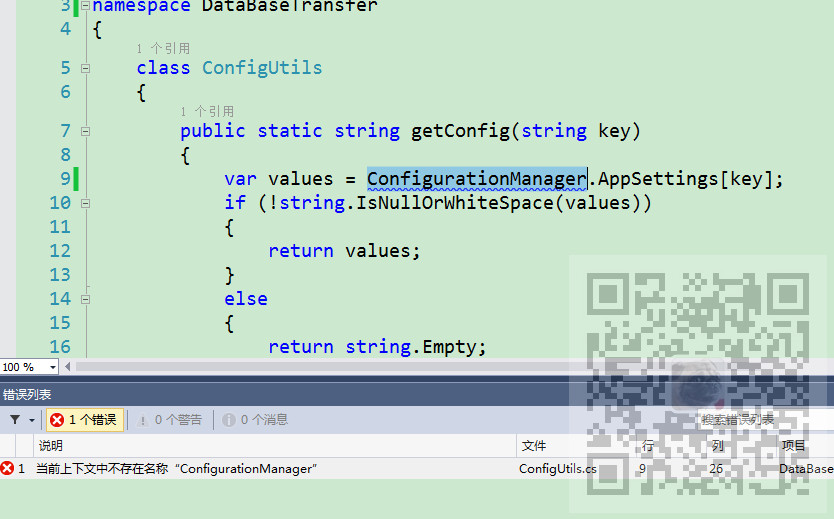
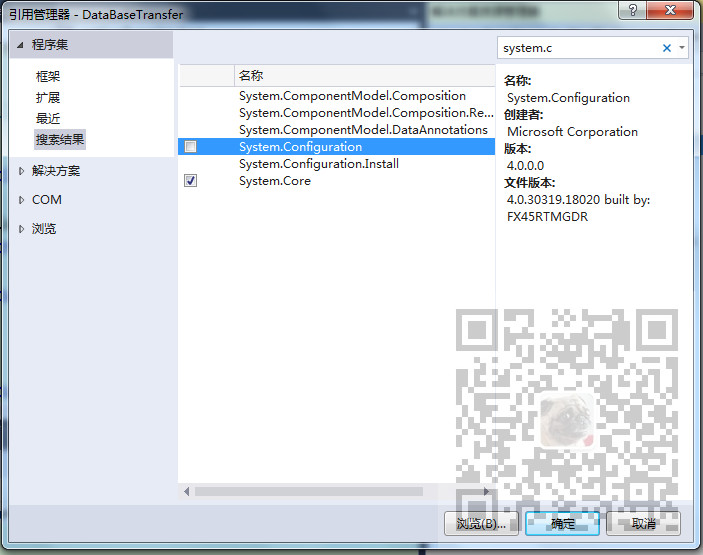

原文出处:本文由博客园博主霸道流氓提供。
原文连接:https://www.cnblogs.com/badaoliumangqizhi/p/12010598.html
原文连接:https://www.cnblogs.com/badaoliumangqizhi/p/12010598.html
场景
想要在程序中获取App.config中设置的内容。
想要通过
ConfigurationManager.AppSettings[key];
来进行获取，已经添加
using System.Configuration;
但是还是提示“当前上下文中不存在名称ConfigurationManager”

实现
除了添加using System.Configuration;
还要重新添加引用
右击引用--添加--System.Configuration
